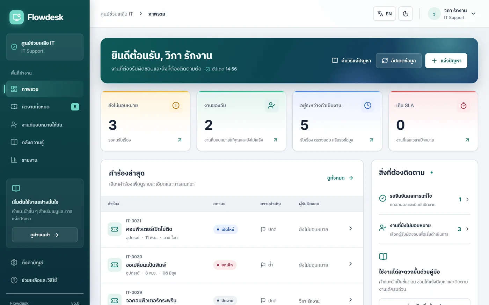
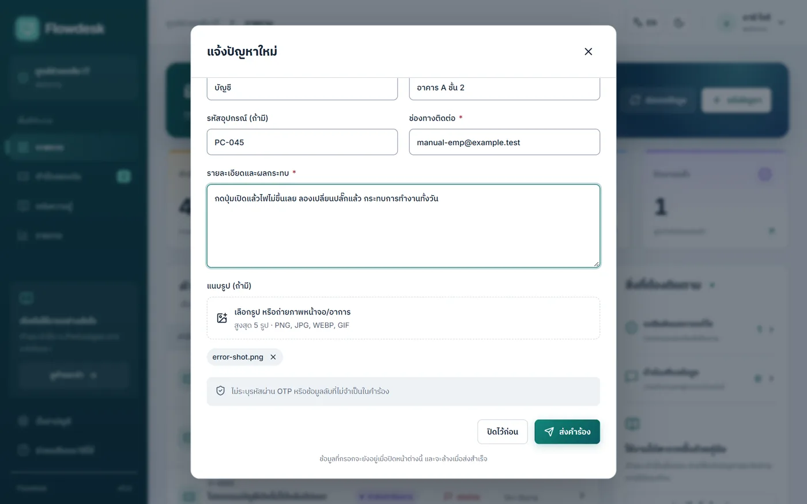
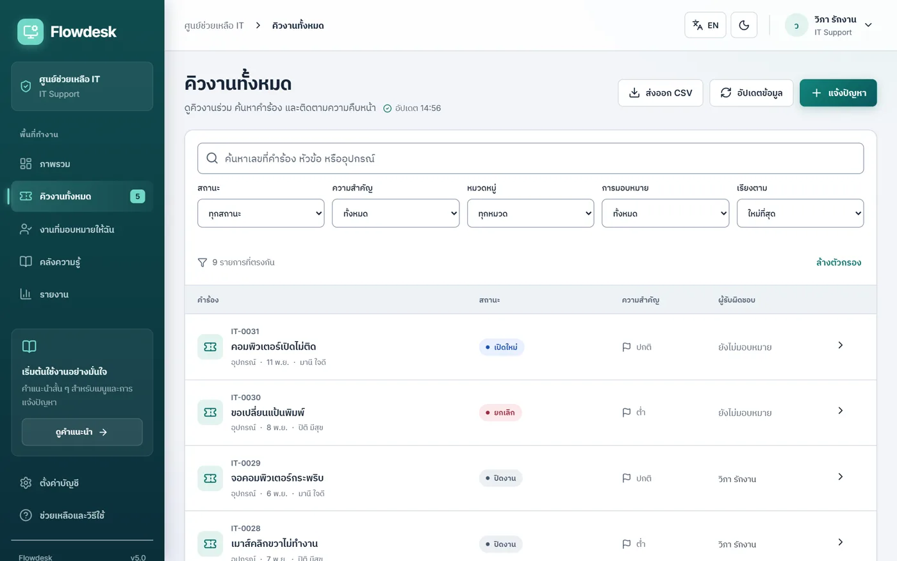
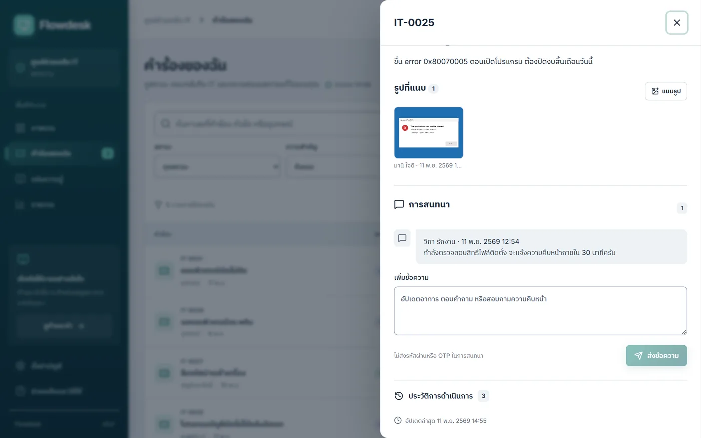
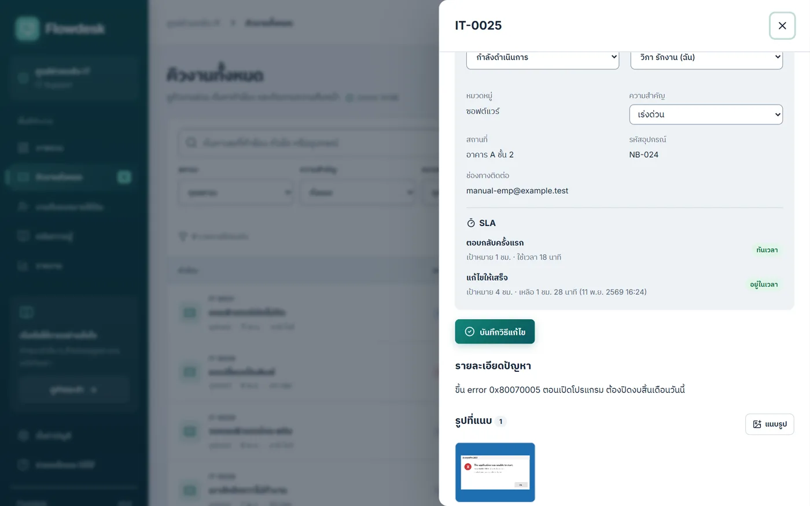
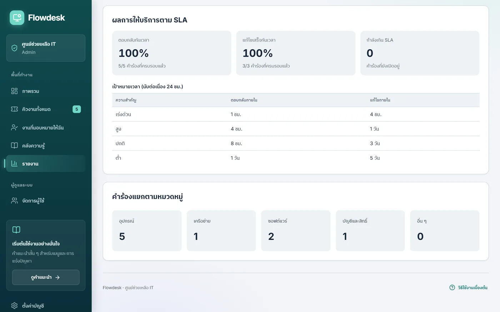
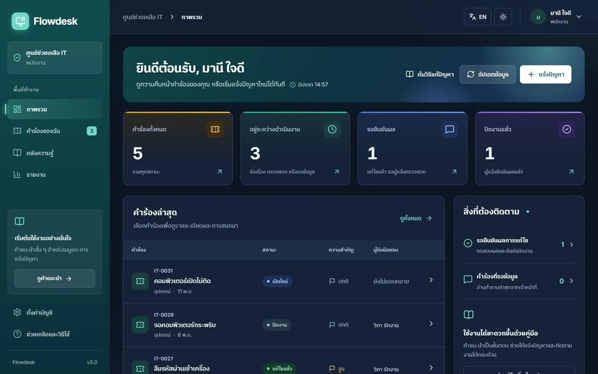

PROJECT PREVIEW / FLOWDESK IT HELPDESK
SCREEN 01 / FLOWDESK
SCREEN 02 / FLOWDESK
SCREEN 03 / FLOWDESK
SCREEN 04 / FLOWDESK
SCREEN 05 / FLOWDESK
SCREEN 06 / FLOWDESK
SCREEN 07 / FLOWDESK
พรีวิวระบบ Flowdesk
พรีวิวงานลูกค้าระบบแจ้งปัญหาและติดตามงานด้านเทคโนโลยีสารสนเทศ ตั้งแต่แจ้งปัญหาพร้อมแนบรูป มอบหมายงาน ติดตามเวลา SLA ไปจนถึงรายงานผลการให้บริการ ใช้งานได้ทั้งคอมพิวเตอร์และมือถือ

ภาพรวมงาน
สรุปคำร้องตามสถานะ งานใกล้ครบกำหนด SLA และสิ่งที่ต้องติดตาม

แจ้งปัญหาพร้อมแนบรูป
ฟอร์มแจ้งปัญหาสั้น ๆ แนบภาพหน้าจอประกอบ ส่งถึงทีมไอทีทันที

คิวงานทั้งหมด
ค้นหา กรองตามสถานะและความสำคัญ และมอบหมายผู้รับผิดชอบ

รายละเอียดคำร้อง
รูปที่แนบ ไทม์ไลน์การดำเนินการ และช่องสนทนากับผู้แจ้ง

SLA และระดับความสำคัญ
ปรับความสำคัญแล้วระบบคำนวณเวลาเป้าหมายใหม่ หยุดนับเมื่อรอข้อมูล

รายงานผลการให้บริการ
อัตราตอบกลับและแก้ไขทันเวลา และสถิติแยกตามหมวดหมู่

โหมดมืด
สลับโหมดสีและภาษาไทย/อังกฤษได้ทุกหน้า